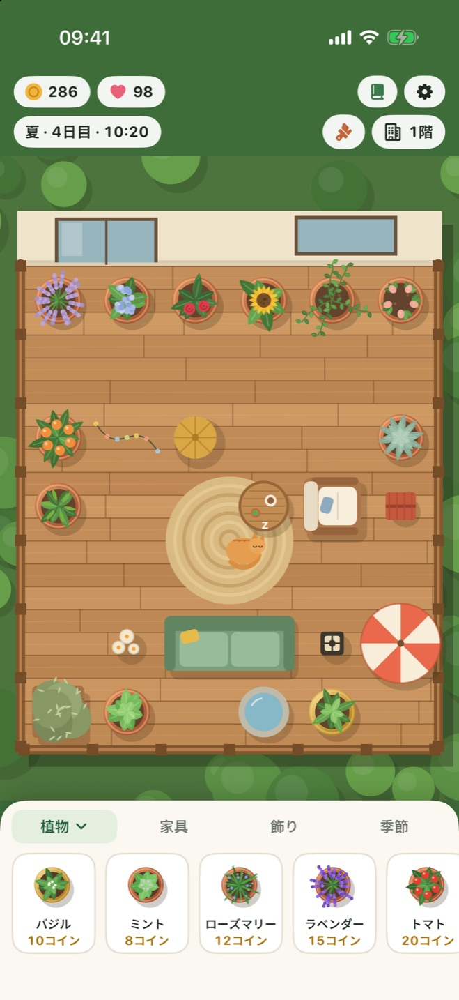
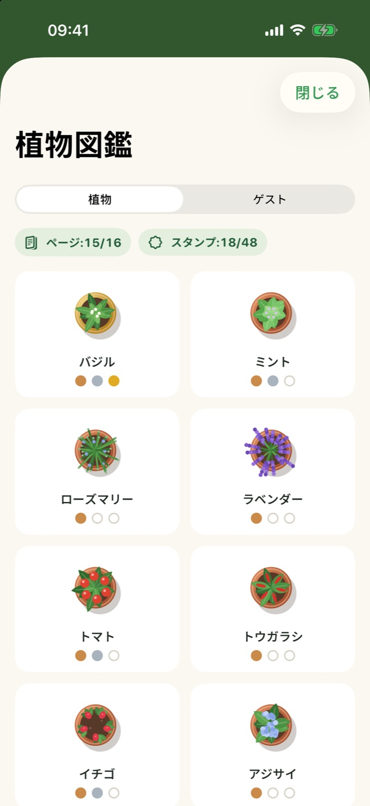
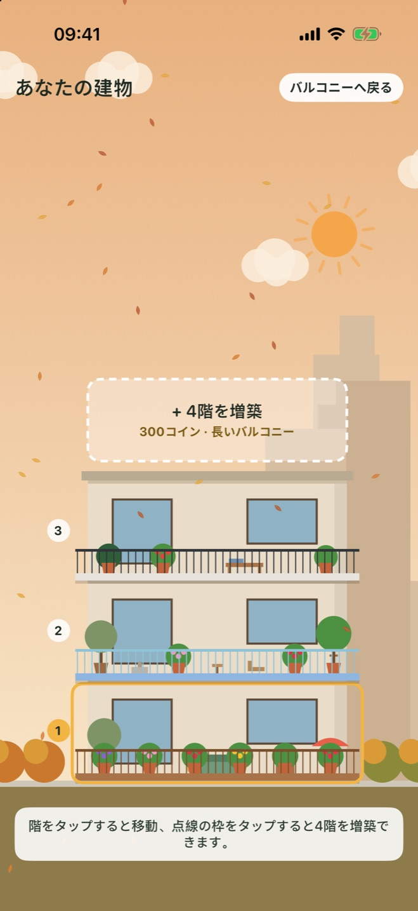

リアルタイムで育つ
ゲームの1日は現実の1時間。毎日のすき間に短くのんびり遊べて、戻ればいつも何かが育っています。
iPhone・iPad対応
ハーブや花、果物を植えて、バルコニーを飾り、季節の移ろいを楽しみ、羽やふわふわのお客さんを迎えよう。毎日にちょっとした癒やしを。
植物をバルコニーにドラッグして、のどが渇いたら水をあげ、実ったら収穫しよう。
ソファやランタン、噴水、新しい床を置こう。居心地のいいバルコニーほどたくさん稼げて、お客さんも増えます。
アプリを閉じていても庭は育ちます。忘れていた植物も枯れません。水を待っているだけです。
毎日のんびり続けられることだけを詰めこみました。急かすものはありません。
ゲームの1日は現実の1時間。毎日のすき間に短くのんびり遊べて、戻ればいつも何かが育っています。
春の雨が水やりをしてくれ、夏の日差しがトマトを実らせ、秋には葉が舞い、冬には手すりに雪が積もります。
家具や飾りをマス目に置き、床をウッドデッキや大理石、モザイクに、手すりも新しいものに替えられます。
チョウやミツバチ、フクロウ、リス、ご近所のネコが遊びに来ます。それぞれの好きなものを見つければ、ネコが住みつくかも。
植物図鑑を成長段階と収穫スタンプで埋めて、コンプリートすると特別なレモンの木が手に入ります。
コインをためて、形の違うバルコニーのついた階を増やそう。建物も季節とともに変わります。
わずかな料金で庭師を呼んで、すべての階の水が足りない植物に水やりし、実った植物を収穫してもらえます。4時間ごとに利用できます。
庭に名前を付けて保存し、いつでも戻れます。最大10件まで保存できます。
iCloud同期をオンにすると、iPhoneとiPadの間で庭が引き継がれます。任意の機能で、データはあなた自身のApple Accountに保存されます。



ひとつの無料ダウンロードで両方に対応。iPadではバルコニーが広くなり、まわりの街並みもより多く見えます。
どの画面でもバルコニーは中央に。庭はステータスバーのまわりまで画面いっぱいに広がります。
| iPhone | iOS 17以降 |
|---|---|
| iPad | iPadOS 17以降 |
| iPhone Duo | 対応 |
| 価格 | 無料。広告もアプリ内課金もありません。 |
|---|---|
| アカウント | 不要。オフラインで遊べます。 |
| 進行状況 | 端末に保存されます。同期をオンにすると、あなた自身のiCloudにも保存されます。 |
Balcony Bloomにはサーバーも、解析も、広告もありません。ゲーム内での行動が開発者に届くことはありません。 プライバシーポリシーを読む